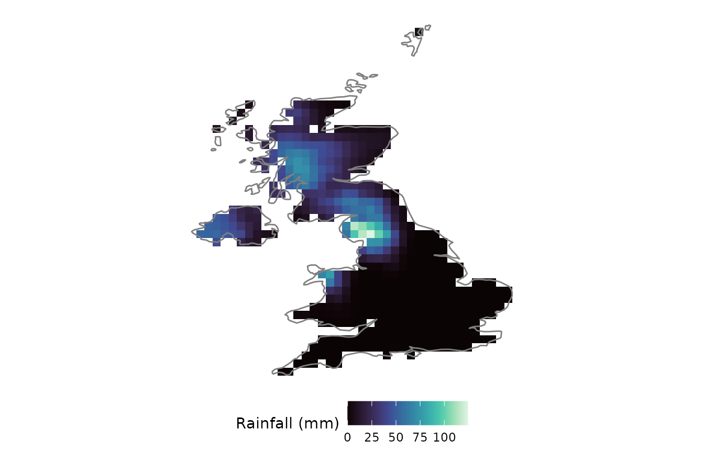
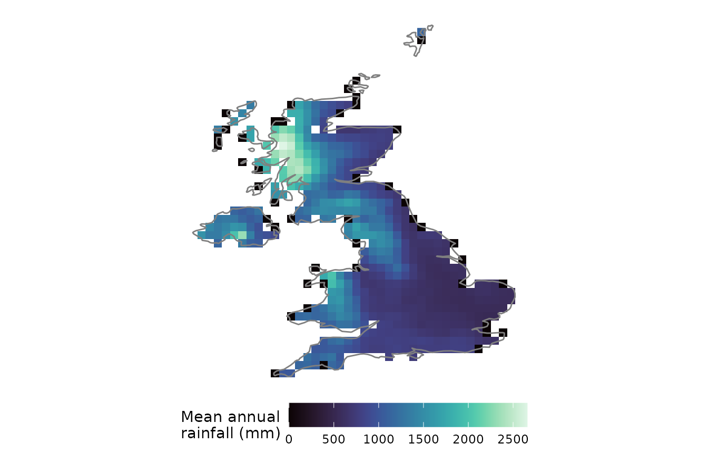
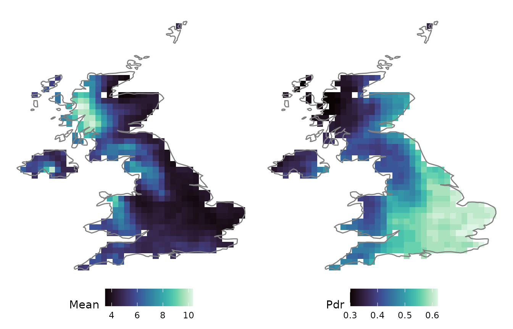
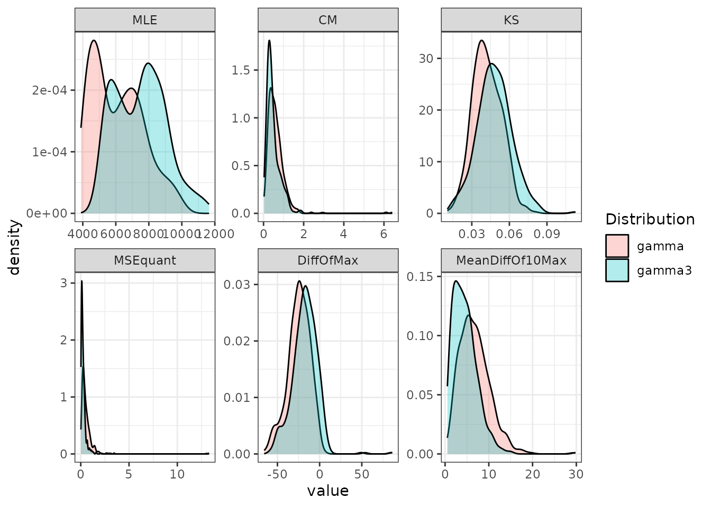
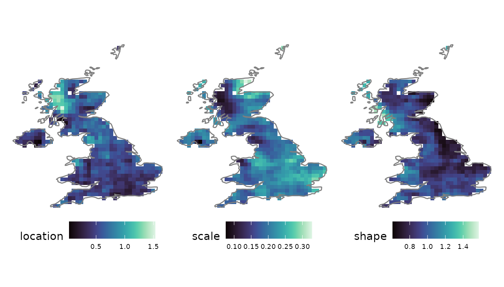
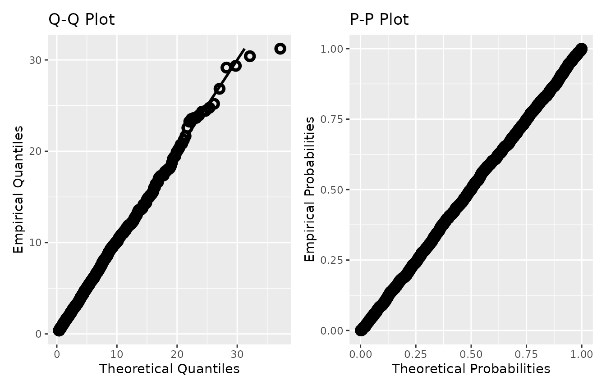

1. Introduction
The statistical and stochastic analysis of hydroclimatic data is a fundamental step for the study of the underlying physical processes, as well as for the related engineering tasks of design, operation and risk assessment. Today, hydroclimatic data are increasingly utilised in risk-based decision making across a wide range of scientific fields and industries. In response, the community has released a plethora of datasets, ranging from centuries-long point measurements to multi-decadal, high-resolution gridded re-analysis and observation products.
Hydroclimatic variables, however, exhibit a wide array of distinct statistical features that make their study a demanding task. For example:
- Seasonality and cyclo-stationarity
- Over-annual trends and long-term persistence
- Intermittency (presence of zero values)
- Highly skewed, heavy-tailed distributions
- Different forms of auto- and cross-correlation
Consequently, tools developed for exploratory data analysis (EDA) of such data should, at minimum, handle both point-based and gridded datasets, span multiple temporal scales, remain extensible and scalable, and achieve computational efficiency through parallelisation.
anyFit aims to address these requirements. It provides a streamlined pipeline for performing EDA on point and gridded timeseries data, consolidating common tasks, such as data loading, plotting, the inference of statistical measures and distribution fitting, into a few lines of code, while admitting a broad range of delimited and NetCDF files.
This vignette demonstrates that pipeline end to end on real data. It uses the E-OBS gridded daily rainfall dataset that ships with the package, clipped to the UK. Each step has a dedicated article that develops it further, with links provided at the end.
2. The anyFit package
anyFit is built on the eXtensible Time Series (xts) data format, which provides an extensible timeseries class by extending the well-known zoo package. All visualisation functions are implemented using ggplot2 and patchwork, so every figure produced by anyFit is a ggplot object and inherits the full customisability of these packages.
A key functionality is the fitting of distribution functions using
the method of L-moments. L-moments are summary
statistics, analogous to the conventional product moments (mean,
variance, skewness, kurtosis), but based on linear combinations of
ordered data values. They are more robust to outliers, provide more
reliable estimates for the skewed and heavy-tailed distributions common
in environmental data, and, unlike Maximum Likelihood Estimation, do not
rely on the i.i.d. assumption, which is routinely violated by the
autocorrelation present in hydroclimatic data. anyFit supports sixteen
distributions, from the Exponential and Gamma to flexible
multi-parameter families such as the Burr type-XII and the Dagum. See
vignette("distribution-fitting") for the full
treatment.
A final design aspect is anyFit’s native handling of
intermittent processes, i.e. the presence of zero
values. Across all functions, including the fitting functions, the
package provides the option to exclude (or include) zeros via a cut-off
threshold (ignore_zeros, zero_threshold), and
typical intermittency measures such as the probability dry
(Pdr) are computed by default.
3. Loading gridded data
anyFit is structured around the
load–process–visualize paradigm. The package ships an
example E-OBS file, ensemble-mean daily rainfall over Europe on a 0.25°
grid (2011–2022), which we locate with system.file().
Gridded NetCDF data are loaded with nc2xts(), which
reads the file directly and returns an
sxts (spatial xts) object: a single
structure that carries the timeseries together with its coordinates and
projection. nc2xts() can clip the data on loading using a
country name, a continent or a bounding box, reading only the requested
spatial hyperslab from disk. Here we clip to the UK.
f <- system.file("extdata", "rr_ens_mean_0.25deg_reg_2011-2022_v27.0e.nc",
package = "anyFit")
# world_data stores the UK under this exact name
uk_name <- "U.K. of Great Britain and Northern Ireland"
rain_uk <- nc2xts(f, varname = "rr", country = uk_name)
summary(rain_uk)
#> Summary of sxts object:
#> Number of elements: 544
#> Number of dates: 4383
#> Range of dates is from: 2011-01-01 to: 2022-12-31
#> Time step is: Strict
#> Time step is: 24 hours
#> Number of dates: 4383
#> Spatial projection: +proj=longlat +datum=WGS84
#> Spatial extent is: -7.875 , 1.625 , 50.125 , 60.625 (xmin, xmax, ymin, ymax)
#> Min value is: NA
#> Max value is: NAThe result is an sxts with one column per grid cell and
one row per day. The sxts class and its spatial operations
are covered in detail in vignette("sxts-class").
Because nc_ggplot() draws one map per timestep, we
visualise a single wet winter day as a snapshot. As the returned object
is a ggplot, we overlay the UK coastline using standard ggplot2
syntax.
nc_ggplot(rain_uk["2015-12-05"], legend.title = "Rainfall (mm)",
viridis.option = "mako") &
borders("world", regions = "UK")
4. Processing: aggregation and statistics
Hydroclimatic processes act on different temporal scales, so it is
useful to aggregate the data. period_apply_nc() aggregates
a gridded sxts over a chosen temporal scale while
preserving the spatial metadata. Here we compute mean annual rainfall
totals.
annual_uk <- period_apply_nc(rain_uk, period = "years", FUN = "sum")
mean_annual <- basic_stats_nc(annual_uk)[["Mean"]]
nc_ggplot(mean_annual, legend.title = "Mean annual\nrainfall (mm)",
viridis.option = "mako") &
borders("world", regions = "UK") &
theme(legend.key.width = grid::unit(1.2, "cm"))
With the data at hand, basic_stats_nc() computes a panel
of statistical measures per cell (moments, L-moments, quantiles and
intermittency measures) and returns them as a multi-layer raster, which
we map with nc_ggplot(). Selecting layers by name keeps the
code readable.
gstats <- basic_stats_nc(rain_uk, ignore_zeros = TRUE)
nc_ggplot(gstats[[c("Mean", "Pdr")]], viridis.option = "mako") &
borders("world", regions = "UK")
5. Distribution fitting
anyFit uses the method of L-moments to infer marginal distribution
parameters. For gridded data this is implemented in
fitlm_nc(), which fits and compares multiple candidate
distributions at once. Here we test two candidates of increasing
flexibility, the 2-parameter Gamma and the 3-parameter Gamma. (The
dedicated article fits more candidates and adds L-ratio
diagnostics.)

fitlm_nc() returns, for each candidate, rasters of the
fitted parameters, the theoretical and sampled L-moments, and the
goodness-of-fit metrics. For example, the fitted 3-parameter Gamma
parameters map as:
nc_ggplot(fits$fit_results$gamma3$raster_params, viridis.option = "mako") &
borders("world", regions = "UK") &
theme(legend.text = element_text(size = 7))
6. Point processes
Many applications require the analysis of point-based timeseries,
such as station observations or a series extracted from a gridded
product. A point series is extracted from the same NetCDF file with
nc2xts_nn(), which returns the value of the nearest grid
cell to the supplied coordinates.
london <- nc2xts_nn(f, varname = "rr", coords = data.frame(x = -0.1278, y = 51.5074))
colnames(london) <- "London"basic_stats() streamlines the essential facets of a
single series (the raw series, the empirical PDF, the empirical CDF and
the autocorrelation function) in one call, while also computing a table
of summary statistics.
bstats <- basic_stats(london, pstart = "2015", pend = "2018", plot = TRUE,
show_table = FALSE, show_label = FALSE, ignore_zeros = TRUE)
bstats$plot
The point-analysis toolkit, comprising monthly (cyclo-stationary)
fitting, autocorrelation structures and dependence diagnostics, is
covered in vignette("point-seasonal").
7. From analysis to stochastic modelling
The outputs of anyFit are designed to feed directly into downstream
stochastic simulation. The fitted marginal distributions and
autocorrelation structures provide exactly the parameters required by
simulation engines such as the anySim package. The
block below reproduces a univariate process with the AutoRegressive To
Anything (ARTA) model, parameterised from a 3-parameter Gamma fit and a
fitted Cauchy-type autocorrelation structure. It runs only if
anySim is installed.
if (requireNamespace("anySim", quietly = TRUE)) {
params <- fitlm_gamma3(london, ignore_zeros = TRUE)
acfs <- fit_ACF(london, lag_max = 10, ignore_zeros = TRUE)
ACS <- anySim::csCAS(param = c(acfs$ACF_params$CAS$beta,
acfs$ACF_params$CAS$kappa), lag = 500)
ARTApar <- anySim::EstARTAp(ACF = ACS, dist = "qgamma3",
params = params$Param, NatafIntMethod = "GH")
sim <- anySim::SimARTAp(ARTApar = ARTApar, steps = 2000)
sim_xts <- xts(as.numeric(unlist(sim$X)),
order.by = seq(as.POSIXct("2100-01-01", tz = "UTC"),
by = "day", length.out = 2000))
fit_diagnostics(sim_xts, dist = "gamma3", params = params$Param,
ignore_zeros = TRUE)$Diagnostic_Plots
}
8. Where to next
This tour touched every stage of the pipeline. Each has a dedicated article:
-
vignette("sxts-class"): the spatial-xts class, its accessors and spatial operations (masking, zonal statistics, raster conversion). -
vignette("distribution-fitting"): L-moment fitting across a grid, goodness of fit, and L-ratio diagnostic diagrams. -
vignette("point-seasonal"): point series, monthly/cyclo-stationary fitting, autocorrelation structures and dependence. -
vignette("gridded-workflow"): the full gridded load–process–visualize workflow, including extreme value analysis.
anyFit offers an integrated framework for the exploratory data
analysis of hydroclimatic data. Through its sxts class it
brings the convenience of xts to the spatial domain, and
through its L-moment-based fitting it provides robust distribution
estimation in the presence of autocorrelation and intermittency, setting
the foundations for a timeseries analysis and modelling ecosystem.